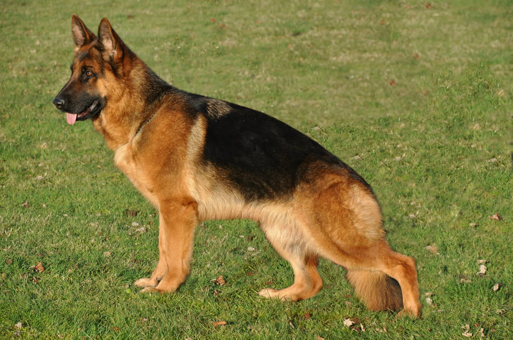

Presentación

El Pastor Alemán es un perro de tamaño grande, con un cuerpo fuerte y musculoso, de estructura bien proporcionada y pelaje denso de doble capa que puede presentarse en tonos negro con fuego, sable o gris. Los machos suelen medir entre 60 y 65 cm y las hembras entre 55 y 60 cm, con un peso que varía entre 30 y 40 kg. Su presencia imponente y su físico atlético lo hacen ideal tanto para trabajo como para compañía.
Personalidad
Esta raza destaca por su inteligencia, lealtad y capacidad de aprendizaje. Tiene un carácter equilibrado y protector, lo que le permite desempeñar tareas de guardia, obediencia o asistencia con gran eficacia. También es un compañero afectuoso con su familia y suele mostrar una actitud calmada y confiable cuando recibe un adiestramiento adecuado.
Origen
Originario de Alemania, este perro fue desarrollado a finales del siglo XIX por el capitán Max von Stephanitz con el objetivo de crear una raza versátil para trabajo de pastoreo. Su combinación de inteligencia, fuerza y obediencia le permitió rápidamente destacarse en tareas policiales, militares y de servicio.
Salud
La esperanza de vida suele oscilar entre los 9 y los 13 años. Aunque suele ser un perro robusto, puede ser propenso a problemas de cadera y codo, así como a ciertas afecciones cardíacas o digestivas. Mantener un control veterinario regular y una vida activa ayuda a detectar y prevenir posibles problemas de salud.
Aseo
Su pelaje denso requiere un cepillado regular para controlar la muda y evitar nudos o acumulación de pelo. Durante las épocas de muda puede requerir más atención. Además, mantener las uñas recortadas y cuidar la higiene dental forman parte del aseo habitual. )
Nutrición
Como perro grande y activo, necesita una dieta equilibrada que proporcione suficientes proteínas y energía para mantener su musculatura y nivel de actividad. Es importante ajustar la cantidad de alimento según la edad y el nivel de ejercicio, así como evitar el sobrepeso para preservar la salud de sus articulaciones.